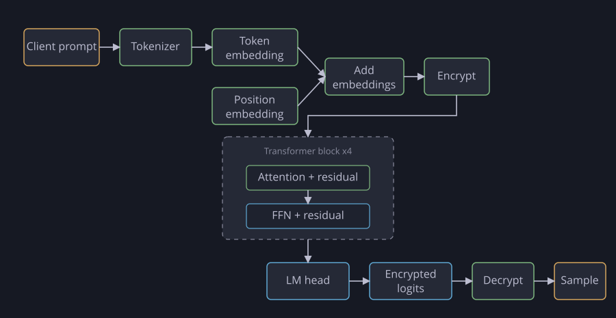

Examples
Section 1.3 showed five demos; this section explains how each one is actually built on top of the CKKS interface from Section 2.1.
Minesweeper
The game state is contained in two ciphertexts. The first, $\mathbf{m}$, encodes the hidden board: a $1$ in every slot that holds a mine and a $0$ everywhere else. The second, $\mathbf{R}$, is a cumulative reveal mask that holds a $1$ in every cell the client has revealed so far and a $0$ in the rest; it starts at all-zeros and is updated in place by every move.
Within the ciphertexts, the board is stored in row-major order: the cells of each row are placed one after another, row by row, and every slot past the board is padded with zeros. Concretely, cell $(i, j)$ of a $\text{width}\times \text{height}$ board lives in slot $i\,(\text{width}+1) + j$, which leaves a one-cell margin: the extra column and extra row are kept as zeros.
Counting the mines around each cell is a $3\times 3$ stencil, which we apply to the whole board at once with rotations. Writing $r = \text{width}+1$ for the row stride, we sum each cell with the one above and below it, then sum that across the three columns:
$$ \begin{aligned} \mathbf{c} &= \mathrm{rot}_{+r}(\mathbf{m}) + \mathbf{m} + \mathrm{rot}_{-r}(\mathbf{m}), \\ \mathbf{n} &= \mathrm{rot}_{+1}(\mathbf{c}) + \mathbf{c} + \mathrm{rot}_{-1}(\mathbf{c}). \end{aligned} $$
A move arrives as a fresh mask $\mathbf{u}$: a ciphertext with a $1$ in each cell the player is revealing on this move and a $0$ everywhere else. The server folds it into $\mathbf{R}$ with a Boolean OR, $$\mathbf{R} \;\leftarrow\; \mathbf{R} + \mathbf{u} - \mathbf{R} \odot \mathbf{u},$$ so $\mathbf{R}$ accumulates a $1$ in every cell revealed across all moves so far. The reply it returns is a single expression that does the rest of the work at once:
$$ \text{result} \;=\; \mathbf{R} \odot (\mathbf{n} + 1) - 1 \;+\; \big(2^{16}\,\mathbf{R} \odot \mathbf{m}\big)^{2}. $$
Read slot by slot, this does three different things at once:
- Unrevealed cells. $\mathbf{R}$ is $0$ there, so both terms collapse and the slot decodes to $-1$.
- Safely revealed cells. $\mathbf{R}$ is $1$ and $\mathbf{m}$ is $0$, so the slot decodes to $(\mathbf{n}+1) - 1 = \mathbf{n}$, the neighbor count in $\{0, 1, \ldots, 8\}$.
- Revealed mines. Both $\mathbf{R}$ and $\mathbf{m}$ are $1$, so the poison term is $2^{32}$, which is too large for the level-$0$ modulus and overflows on encoding, corrupting every slot of the reply.
The cumulative reveal mask is updated in place every move, and the OR's multiply consumes one level each time, so $\mathbf{R}$ steadily loses levels and must be refreshed before it can no longer afford a move. Refreshing drops it to level $0$ and bootstraps it back to a high level, after which the bit cleaning polynomial $$S(x) = 3x^2 - 2x^3,$$ which fixes $S(0) = 0$ and $S(1) = 1$ and has $S'(0) = S'(1) = 0$, is applied to the bootstrapped ciphertext to pull each slot back to a clean $0$ or $1$ for numerical stability.
Conway's Game of Life
For this demo, the entire state of the grid is contained in one ciphertext $\mathbf{b}$, holding a $1$ for every live cell and a $0$ for every dead one. The grid is $128\times 128$, laid out row by row, with cell $(i, j)$ at slot $(128\,i + j)\cdot 2$. The cyclic rotations wrap the 2D grid as a single 1D loop — the right edge of one row joins the left edge of the next, and the top edge matches with the bottom edge.
Counting live neighbors is again a $3\times 3$ stencil, done with a row-then-column reduction. The rows above and below are formed first, $$\mathbf{b}_\uparrow = \mathrm{rot}_{256}(\mathbf{b}), \qquad \mathbf{b}_\downarrow = \mathrm{rot}_{-256}(\mathbf{b}),$$ and their column sum $\mathbf{c} = \mathbf{b}_\uparrow + \mathbf{b} + \mathbf{b}_\downarrow$ is reduced across the three columns, with the center removed to leave the eight-neighbor count, $$\mathbf{n} = \mathrm{rot}_{2}(\mathbf{c}) + \mathbf{c} + \mathrm{rot}_{-2}(\mathbf{c}) - \mathbf{b}.$$ Every slot of $\mathbf{n}$ then holds that cell's neighbor count $n \in \{0, \ldots, 8\}$.
For the update rule, we need a single bivariate polynomial $P(n, y)$ that reproduces the Game of Life transition at every integer input, where $n \in \{0, \ldots, 8\}$ is the neighbor count and $y \in \{0, 1\}$ is the current cell. It is built around the degree-$7$ polynomial $$q(n) = n(n-1)(n-4)(n-5)(n-6)(n-7)(n-8).$$ Only $n = 2$ and $n = 3$ survive, and the rest of $P$ is tuned so that at $n = 2$ it returns $y$ (the cell persists) and at $n = 3$ it returns $1$ (the cell is born or stays alive), with higher-order terms that allow the polynomial to be numerically stable.
Written out, the update polynomial is $$P(n, y) = \frac{q(n)}{1440}\Big((n-3)y - 2(n-2) - (n-2)(n-3)\,h(n, y)\Big),$$ where $h$ is the correction term $h(n, y) = \sum_{i, j} c_{ij}\,(n-4)^i y^j$ with nonzero coefficients $$ \begin{aligned} c_{00} &= -\tfrac{784787}{551250}, & c_{10} &= -\tfrac{969982}{826875}, & c_{20} &= \tfrac{454561}{661500}, & c_{30} &= \tfrac{97333}{661500}, \\ c_{40} &= -\tfrac{2055029}{26460000}, & c_{50} &= -\tfrac{67933}{13230000}, & c_{60} &= \tfrac{11}{4320}, \\ c_{01} &= \tfrac{269281}{275625}, & c_{11} &= -\tfrac{1438879}{6615000}, & c_{21} &= -\tfrac{81841}{294000}, & c_{31} &= \tfrac{508531}{5292000}, \\ c_{41} &= \tfrac{14321}{1102500}, & c_{51} &= -\tfrac{128209}{26460000}. \end{aligned} $$
The client can also inject a pattern while the game runs. The drawn pattern is added to the board, producing slots that are $0$, $1$, or $2$ (where the two overlap), and a cleaning polynomial $f$ then collapses the $2$ back to $1$. It is the degree-$7$ polynomial $$f(x) = (x-1)^2(x-2)^2\!\left(\tfrac{15}{16}x^3 - \tfrac{91}{80}x^2 - \tfrac{3}{4}x - \tfrac{1}{4}\right) + 1,$$ which fixes $f(0) = 0$ and $f(1) = f(2) = 1$ with $f'(0) = f'(1) = f'(2) = 0$, and spends its two remaining degrees of freedom minimizing $\max\big(|f''(0)|, |f''(1)|, |f''(2)|\big)$. Addition followed by $f$ is therefore an encrypted union, and the flat derivatives clean up noise at the same time.
Each generation spends four levels on $P$, so the level budget runs out after a few steps and must be refilled by bootstrapping. The parameters are chosen so that bootstrapping returns a level-$15$ ciphertext. The cleaning polynomial $f$ is degree $7$, so it costs $\lceil \log_2 8 \rceil = 3$ levels and leaves $12$. Each generation's polynomial $P$ then costs $4$, and $12$ divides into exactly three of them: $12 \to 8 \to 4 \to 0$. Once the board reaches level $0$ it is bootstrapped back to $15$ and the cycle repeats.
Regression
The regression demo fits a linear or logistic model over many parties' encrypted data, with the whole training loop run on ciphertexts by gradient descent.
Each model predicts a sample's target from its features through an intercept $\alpha$ and per-feature weights $\beta_i$, $$ y \approx \alpha + \sum_i \beta_i\,\mathbf{x}_i \quad(\text{linear}), \qquad y \approx \sigma\!\Big(\alpha + \sum_i \beta_i\,\mathbf{x}_i\Big) \quad(\text{logistic}), $$ where $\sigma$ is the sigmoid; the two differ only in that activation and otherwise share the same training loop.
Each participant encrypts only their own rows, so the server has to assemble those contributions into the shared per-feature ciphertexts. A participant encrypts a value into a single slot of a ciphertext, and the server repacks it into the slot reserved for that sample with a mask-and-rotate: one multiplication by a plaintext mask that is $1$ in the source slot and $0$ everywhere else, to isolate the value, followed by one rotation to slide it into its target slot. Each value contributed therefore costs a single mask and rotation, and the repacked pieces are accumulated into the $\mathbf{x}_i$ and $\mathbf{y}$ ciphertexts by addition.
The data is packed one feature per ciphertext: with up to $32768$ samples, feature $i$ of sample $j$ occupies slot $j$ of a ciphertext $\mathbf{x}_i$, and sample $j$'s target occupies slot $j$ of a ciphertext $\mathbf{y}$. Before encryption each feature is standardized by a public mean and standard deviation, $\mathbf{x}_i \leftarrow (\mathbf{x}_i - \mu_i)/s_i$, so the features sit on a comparable scale; these statistics are not secret and need only be rough estimates.
Training is gradient descent: $$ \beta \;\leftarrow\; \beta - \eta\Big(\tfrac{1}{n}\, X^\top(\hat{\mathbf{y}} - \mathbf{y}) + \lambda\beta\Big), $$ where $\hat{\mathbf{y}} = X\beta$ for linear regression and $\hat{\mathbf{y}} = \sigma(X\beta)$ for logistic, $\eta$ is the learning rate and $\lambda$ the ridge strength. Here $\beta$ collects the intercept $\alpha$ together with the weights, and the penalty $\lambda\beta$ leaves the intercept untouched.
Each iteration runs one gradient step directly on the ciphertexts. Write $\Sigma$ for the all-slot sum — the rotate-and-add reduction that adds a vector to copies of itself rotated by $1, 2, 4, \ldots, 16384$, fifteen steps after which every slot holds the total — and $\ell$ for a plaintext mask carrying $\eta/n$ in the data slots and $0$ elsewhere. Then one step is the following, where $f$ is the identity for linear regression and the cubic sigmoid for logistic: $$ \begin{aligned} \hat{\mathbf{y}} &= f\!\Big(\alpha + \sum_i \beta_i \mathbf{x}_i\Big), \\ \mathbf{r} &= \hat{\mathbf{y}} - \mathbf{y}, \\ \alpha &\leftarrow \alpha - \Sigma(\ell \odot \mathbf{r}), \\ \beta_i &\leftarrow (1 - \eta\lambda)\,\beta_i - \Sigma(\ell \odot \mathbf{x}_i \odot \mathbf{r}). \end{aligned} $$ The mask $\ell$ folds the learning rate and the $1/n$ averaging into a single multiply, and the $(1 - \eta\lambda)$ factor applies the ridge decay. Its zeros outside the data slots also matter: with fewer than $32768$ samples the padded slots still carry a nonzero residual (there $\mathbf{x}_i = 0$, so $\hat{\mathbf{y}} = f(\alpha)$ while $\mathbf{y} = 0$), and the mask is what keeps them out of the gradient sums.
Logistic regression has the extra wrinkle that the sigmoid is not a polynomial. It is replaced by its Remez polynomial approximant; the demo uses a cubic on $[-5, 5]$, $$\sigma(x) \approx 0.5 + 0.1975\,x - 0.004266\,x^3,$$ accurate to about $0.04$ across the interval. That interval matters, because a polynomial that hugs the sigmoid on $[-5, 5]$ diverges wildly outside it, so the training has to keep every logit in range.
The level cost is counted per iteration: a linear-regression step spends two levels and a logistic step spends four, the cubic activation accounting for the extra two. The CKKS depth is then that per-iteration cost times the number of iterations, and if a run needs more iterations than the depth allows, the coefficients can be bootstrapped partway through to keep going.
At the end only the coefficients are decrypted, and they are un-standardized back to the original feature scale with $$ \beta_i = \frac{\tilde\beta_i}{s_i}, \qquad \alpha = \tilde\alpha - \sum_i \frac{\tilde\beta_i\,\mu_i}{s_i}, $$ where $\tilde\beta, \tilde\alpha$ are the coefficients learned in standardized space.
Image classification
The image classification demo runs a small convolutional network over an encrypted handwritten digit, so the server classifies the image without ever seeing it: the client encrypts a $28\times 28$ image, the server evaluates the whole network on the ciphertext, and the client decrypts the class scores. The network is two convolutions, a $4\times 4$ average pool, and two fully-connected layers, with the activation $$\tanh_{\text{approx}}(x) = 0.785\,x - 0.056\,x^3,$$ a degree-$3$ polynomial approximating $\tanh$. It is trained in the clear, and only inference runs on ciphertext.
| Step | Output shape | Notes |
|---|---|---|
| Input image | $28 \times 28 \times 1$ | MNIST grayscale image |
| Pad and encrypt | $32 \times 32 \times 1$ | Zero-padded and packed into ciphertext slots |
| Convolution 1 | $32 \times 32 \times 4$ | $3 \times 3$, one input channel to four output channels |
tanh_approx | $32 \times 32 \times 4$ | Slotwise polynomial activation |
| Convolution 2 | $32 \times 32 \times 8$ | $3 \times 3$, four input channels to eight output channels |
tanh_approx | $32 \times 32 \times 8$ | Slotwise polynomial activation |
| Average pool | $8 \times 8 \times 8$ | $4 \times 4$ pooling, leaving $512$ values |
| Repack | $512$ | Rearranges pooled values for dense layers |
| Dense 1 | $32$ | Hidden layer |
tanh_approx | $32$ | Slotwise polynomial activation |
| Dense 2 | $10$ | One logit per digit |
| Decrypt and argmax | $10 \to 1$ | Client reads the predicted digit |
The image sets the data layout for everything downstream. The $28\times 28$ pixels, with values in $[0, 1]$, are zero-padded into a $32\times 32$ grid, flattened row-major, and placed every $k = 4$ slots apart, so pixel $(r, c)$ occupies slot $(32r + c)\cdot k$. The spacing leaves gaps that later layers use to hold multiple channels without collisions.
Write $\mathbf{x}$ for the encrypted image and $\mathrm{rot}_\rho$ for a rotation by $\rho$ slots; plaintext weights, masks, and biases are written without boldface. A convolution is a weighted sum, over the nine kernel taps, of the input rotated to align each tap. The first convolution (one input channel, four output channels) is $$\mathbf{h}_1 = \sum_{o=0}^{3}\ \sum_{p,q=0}^{2} w^{(1)}_{o,p,q}\,\mathrm{rot}_{\rho_1(o,p,q)}(\mathbf{x}) \;+\; b_1, \qquad \rho_1(o,p,q) = \big((p-1)\,32 + (q-1)\big)k - 8192\,o.$$ The $-8192\,o$ in the rotation deposits output channel $o$ into its own block of $8192$ slots, so all four channels are produced at once. The $36$ rotate-and-scale terms are accumulated by one batched dot product (a single rescale, one level), and the bias plaintext $b_1$ carries channel $o$'s bias across its block.
The activation is applied slotwise, at a cost of two levels: $$\mathbf{h}_2 = \tanh_{\text{approx}}(\mathbf{h}_1).$$
The second convolution (four input channels, eight output channels) packs its outputs at stride $4096$ — half the input's $8192$ — so the channels interleave. Rotating the input by $4096\,j$ aligns output block $o$ with input channel $i = (o+j)/2 \bmod 4$ when $o+j$ is even, and with an empty gap when $o+j$ is odd. A per-slot plaintext mask $m^{(2)}_{j,p,q}$ supplies the weight $w^{(2)}_{o,i,p,q}$ in the even case and $0$ in the odd one, giving $$\mathbf{h}_3 = \sum_{j=0}^{7}\ \sum_{p,q=0}^{2} m^{(2)}_{j,p,q}\odot \mathrm{rot}_{\rho_2(j,p,q)}(\mathbf{h}_2) \;+\; b_2, \qquad \rho_2(j,p,q) = 4096\,j + \big((p-1)\,32 + (q-1)\big)k.$$ Its $72$ terms again collapse into one dot product at one level. A second activation follows, $$\mathbf{h}_4 = \tanh_{\text{approx}}(\mathbf{h}_3).$$
Average pooling sums each $4\times 4$ window by adding the sixteen rotations of $\mathbf{h}_4$, then multiplies by a mask $m_\text{pool}$ that is $\tfrac1{16}$ at the slots that survive pooling and $0$ elsewhere: $$\mathbf{h}_5 = m_\text{pool} \odot \sum_{p,q=0}^{3} \mathrm{rot}_{(32p + q)k}(\mathbf{h}_4).$$ The mask multiply is the only rescale, so pooling costs one level. The $512$ surviving values are then re-spaced to the regular stride the dense layers expect; only the column spacing changes, by rotating each column into place and masking it, $$\mathbf{h}_6 = \sum_{c=0}^{7} m_c \odot \mathrm{rot}_{-48\,c}(\mathbf{h}_5),$$ where $m_c$ selects column $c$'s target slots.
The two dense layers are plaintext-matrix times encrypted-vector products, each evaluated at one level with the baby-step/giant-step method and finished with a plaintext bias, and the first is followed by a third activation: $$\mathbf{h}_7 = W^{(\mathrm{f}1)}\mathbf{h}_6 + b_3, \qquad \mathbf{h}_8 = \tanh_{\text{approx}}(\mathbf{h}_7), \qquad \mathbf{h}_9 = W^{(\mathrm{f}2)}\mathbf{h}_8 + b_4.$$ The output $\mathbf{h}_9$ holds the ten class logits, which the client decrypts and reads off the largest.
Language model inference
The language model demo runs a small GPT-2-style transformer over an encrypted prompt: the prompt is tokenized and embedded in the clear, the transformer blocks run on ciphertext, and the encrypted next-token logits come back to the client to sample from. As in Section 1.5, the model is a $4$-layer decoder-only transformer with embedding dimension $d = 256$, $H = 2$ heads of dimension $d_h = 128$, context length $T = 128$, and vocabulary $V = 16384$, trained in the clear.
It is norm-free (ReZero) and uses sigmoid attention rather than softmax. Writing $E$ for the weight-tied token embedding, the residual stream starts at $\mathbf{h}_0 = E[t] + \text{PosEmb}(p)$, and each block applies $$\mathbf{x} \leftarrow \mathbf{x} + \alpha_{\text{attn}}\,\text{Attn}(\mathbf{x}), \qquad \mathbf{x} \leftarrow \mathbf{x} + \alpha_{\text{ffn}}\,\text{FFN}(\mathbf{x}),$$ with bias-less projections $Q = \mathbf{x}W_Q$, $K = \mathbf{x}W_K$, $V = \mathbf{x}W_V$ and $$\text{Attn}(\mathbf{x}) = \Big(\big(\sigma\big(\tfrac{QK^\top}{\sqrt{d_h}} + b\big) \odot M\big)\,V\Big)W_O, \qquad \text{FFN}(\mathbf{x}) = \text{GELU}(\mathbf{x}W_1)\,W_2,$$ where $b$ is a per-head bias, $M$ the causal mask, and $W_1, W_2$ the $256 \to 1024 \to 256$ feed-forward weights. The final LM head reuses the embedding, $\text{logits} = \mathbf{h}_N E^\top$.

The forward pass is a long chain of linear maps, two nonlinearities (the sigmoid and the GELU), and periodic bootstraps to refresh levels. The rest of this section covers how the residual stream is packed into slots, how the linear maps and the two encrypted matrix products are realized, how the nonlinearities become polynomials, and how the level budget is balanced.
Packing the residual stream
The residual stream is a $T \times d = 128 \times 256$ activation matrix packed into a single $32768$-slot ciphertext. The attention scores and per-head quantities are instead $128 \times 128$ matrices that use only the lower $16384$ slots (the upper half is either zero or a duplicate, depending on how it was produced).
Each matrix is stored in one of four slot encodings. Writing $S[r,c]$ for the slot that holds entry $(r, c)$ (with $r \in [0, 128)$, $c \in [0, 256)$ for the $128 \times 256$ activation matrix), they are $$\begin{aligned} \text{column-major:}\quad & S[r,c] = 16384\lfloor c/128\rfloor + 128\,(c \bmod 128) + r, \\ \text{shifted column-major:}\quad & S[r,c] = 16384\lfloor c/128\rfloor + 128\,((c-r) \bmod 128) + r, \\ \text{transpose:}\quad & S[r,c] = 16384\lfloor c/128\rfloor + 128\,r + (c \bmod 128), \\ \text{shifted transpose:}\quad & S[r,c] = 16384\lfloor c/128\rfloor + 128\,r + ((c-r) \bmod 128). \end{aligned}$$
To see the layouts concretely, here is a scaled-down $4 \times 8$ matrix (two $4$-wide head blocks, divided by the bar), with each entry $(r, c)$ replaced by the slot it occupies: $$\text{column-major}\qquad \begin{array}{cccc|cccc} 0 & 4 & 8 & 12 & 16 & 20 & 24 & 28 \\ 1 & 5 & 9 & 13 & 17 & 21 & 25 & 29 \\ 2 & 6 & 10 & 14 & 18 & 22 & 26 & 30 \\ 3 & 7 & 11 & 15 & 19 & 23 & 27 & 31 \end{array}$$ $$\text{shifted column-major}\qquad \begin{array}{cccc|cccc} 0 & 4 & 8 & 12 & 16 & 20 & 24 & 28 \\ 13 & 1 & 5 & 9 & 29 & 17 & 21 & 25 \\ 10 & 14 & 2 & 6 & 26 & 30 & 18 & 22 \\ 7 & 11 & 15 & 3 & 23 & 27 & 31 & 19 \end{array}$$ $$\text{transpose}\qquad \begin{array}{cccc|cccc} 0 & 1 & 2 & 3 & 16 & 17 & 18 & 19 \\ 4 & 5 & 6 & 7 & 20 & 21 & 22 & 23 \\ 8 & 9 & 10 & 11 & 24 & 25 & 26 & 27 \\ 12 & 13 & 14 & 15 & 28 & 29 & 30 & 31 \end{array}$$ $$\text{shifted transpose}\qquad \begin{array}{cccc|cccc} 0 & 1 & 2 & 3 & 16 & 17 & 18 & 19 \\ 7 & 4 & 5 & 6 & 23 & 20 & 21 & 22 \\ 10 & 11 & 8 & 9 & 26 & 27 & 24 & 25 \\ 13 & 14 & 15 & 12 & 29 & 30 & 31 & 28 \end{array}$$
A $128 \times 128$ head matrix uses the same encodings on a single head block, filling the lower $16384$ slots and leaving the upper half zero or duplicated. Its scaled-down $4 \times 4$ layouts (slots $0$ through $15$) are $$\text{column-major}\quad \begin{array}{cccc} 0 & 4 & 8 & 12 \\ 1 & 5 & 9 & 13 \\ 2 & 6 & 10 & 14 \\ 3 & 7 & 11 & 15 \end{array} \qquad \text{shifted column-major}\quad \begin{array}{cccc} 0 & 4 & 8 & 12 \\ 13 & 1 & 5 & 9 \\ 10 & 14 & 2 & 6 \\ 7 & 11 & 15 & 3 \end{array}$$ $$\text{transpose}\quad \begin{array}{cccc} 0 & 1 & 2 & 3 \\ 4 & 5 & 6 & 7 \\ 8 & 9 & 10 & 11 \\ 12 & 13 & 14 & 15 \end{array} \qquad \text{shifted transpose}\quad \begin{array}{cccc} 0 & 1 & 2 & 3 \\ 7 & 4 & 5 & 6 \\ 10 & 11 & 8 & 9 \\ 13 & 14 & 15 & 12 \end{array}$$
Each conversion only permutes which slot holds entry $(r, c)$, so it is a linear map — a multiply by a fixed permutation matrix — and is carried out with the baby-step/giant-step matrix-multiplication routine. That routine builds a matrix multiply out of the matrix's nonzero diagonals, each applied as a rotation by its index, so the diagonal indices column lists those rotation offsets, the count is how many there are, and the key-switches column counts the rotation keys the routine spends. Not every encoding pair can be converted cheaply; only three conversions are built:
| Source | Target | Diagonal indices | Count | Key-switches |
|---|---|---|---|---|
| column-major | shifted column-major | $128m,\ |m| \le 127$ | $255$ | $30$ |
| column-major | transpose | $127m,\ |m| \le 127$ | $255$ | $30$ |
| transpose | shifted transpose | $m,\ |m| \le 127$ | $255$ | $30$ |
These layouts exist to make the ciphertext–ciphertext matrix multiplication efficient: the shifted encodings are exactly what let that product reduce to a sum of rotations, as the section on it below shows.
Linear layers
Every projection in the model ($W_Q, W_K, W_V, W_O, W_1, W_2$) is a multiply by a fixed plaintext matrix, $\mathbf{y} = \mathbf{x}W$, on a column-major input: the standard baby-step/giant-step matrix-multiplication subroutine, one level each. A full matrix uses all of its diagonals, while a half-width matrix (for per-head projections) stores half and recovers the rest with one extra fold rotation:
| Matrix | Diagonal indices | Count | Key-switches |
|---|---|---|---|
| $256 \times 256$ | $128m,\ 0 \le m \le 255$ | $256$ | $30$ |
| $256 \times 128$ | $128m,\ 0 \le m \le 127$ | $128$ | $23$ |
The weights can be pre-encoded so the result comes out in either column-major or shifted column-major, so the column-major to shifted column-major conversion is free when folded into a projection.
The encoding conversions from the previous section are otherwise the same matrix multiply, and chaining the three available conversions reaches every encoding the matrix products below require, such as the shifted transpose reached by going column-major, then transpose, then shifted transpose.
Ciphertext–ciphertext multiplication
Attention needs two products of encrypted matrices: the scores $QK^\top$ and the output $\text{attn}\,V$. Both run through an encrypted matrix-multiplication routine, the ciphertext–ciphertext version of the baby-step/giant-step method with both operands encrypted, but they are two distinct overloads, with slightly different wrap corrections and different key-switch counts. Each requires its left operand $\mathbf{A}$ in shifted column-major and its right operand $\mathbf{B}$ in shifted transpose, and the shifted encodings turn the contraction $\mathbf{A}\mathbf{B}^\top$ into a sum of pointwise products of rotations.
A rotation can carry a slot's row index past the $128$-boundary, so the right operand is wrap-corrected by a per-slot $0/1$ mask. At a slot with within-block row index $\sigma = s \bmod 128$, the mask $m_{b,g}$ is $1$ when $\sigma + l < 128$ (with $l = b + 8g$) and $0$ otherwise (pre-rolled by $8g$ to match the outer rotation), and it splices in a shifted copy $\mathbf{B}' = \mathrm{rot}_{-128}(\mathbf{B})$ on the wrapped slots: $$\mathbf{B}_{b,g} = m_{b,g}\odot\mathrm{rot}_b(\mathbf{B}) + (1 - m_{b,g})\odot\mathrm{rot}_b(\mathbf{B}').$$ Throughout, $b \in \{0, \ldots, 7\}$ and $g \in \{0, \ldots, 15\}$, and the masks are folded onto whichever operand sits at the higher level.
The output product (a $128 \times 128$ head matrix times a $128 \times 256$ activation matrix, contracting the $128$ key positions) sidesteps any head-block wrap by pre-duplicating $\mathbf{A}$'s two halves, $\mathbf{A}_{\text{full}} = \mathbf{A} + \mathrm{rot}_{16384}(\mathbf{A})$, and returns a $128 \times 256$ activation matrix in column-major: $$\mathbf{C} = \sum_{g=0}^{15} \mathrm{rot}_{8 g}\Big(\sum_{b=0}^{7} \mathrm{rot}_{128 b + 1016 g}(\mathbf{A}_{\text{full}}) \odot \mathbf{B}_{b,g}\Big).$$
The query–key product (two $128 \times 256$ activation matrices, contracting the full $256$-wide inner dimension) instead corrects a second wrap, in the head-block index $\tau = \lfloor s/128 \rfloor \bmod 128$: a mask $a_{b,g}$, $1$ when $\tau + l < 128$, splices in the head-swapped copy $\mathrm{rot}_{16384}(\mathbf{B}_{b,g})$, and a final fold sums the two head blocks, returning a $128 \times 128$ head matrix in column-major: $$\mathbf{C}_0 = \sum_{g=0}^{15} \mathrm{rot}_{8 g}\Big(\sum_{b=0}^{7} \mathrm{rot}_{128 b + 1016 g}(\mathbf{A}) \odot \big(a_{b,g}\odot\mathbf{B}_{b,g} + (1 - a_{b,g})\odot\mathrm{rot}_{16384}(\mathbf{B}_{b,g})\big)\Big),$$ $$\mathbf{C} = \mathbf{C}_0 + \mathrm{rot}_{16384}(\mathbf{C}_0).$$
| Product | Left $\mathbf{A}$ | Right $\mathbf{B}$ | Output | Key-switches |
|---|---|---|---|---|
| query–key | $128 \times 256$, shifted column-major | $128 \times 256$, shifted transpose | $128 \times 128$, column-major | $190$ |
| output | $128 \times 128$, shifted column-major | $128 \times 256$, shifted transpose | $128 \times 256$, column-major | $174$ |
Attention
Attention is computed head by head. Each head projects the residual stream into queries, keys, and values, $$Q_h = \mathbf{x}W_{Q,h}, \qquad K_h = \mathbf{x}W_{K,h}, \qquad V_h = \mathbf{x}W_{V,h},$$ three plaintext-matrix linears. The scores are an encrypted matrix multiplication of $Q_h$ and $K_h$, after converting the two operands to the shifted encodings the routine expects, scaled by $1/\sqrt{d_h}$ and offset by the per-head bias: $$\mathbf{s}_h = \tfrac{1}{\sqrt{d_h}}\,Q_h K_h^\top + b_h.$$ The masked sigmoid turns the scores into the attention weights $\mathbf{a}_h = \sigma(\mathbf{s}_h) \odot M$ in one polynomial evaluation. Each head's output is a second encrypted product $\mathbf{a}_h V_h$, and the per-head outputs are projected together by $W_O$: $$\text{Attn}(\mathbf{x}) = \text{concat}_h\big(\mathbf{a}_h V_h\big)\,W_O.$$ The sublayer adds its ReZero-gated result to the stream, $\mathbf{x} + \alpha_{\text{attn}}\,\text{Attn}(\mathbf{x})$.
Feed-forward
The feed-forward sublayer is $\text{FFN}(\mathbf{x}) = \text{GELU}(\mathbf{x}W_1)\,W_2$ with a $1024$-wide hidden layer. Since $1024$ columns do not fit in one $128 \times 256$ tile, $W_1$ and $W_2$ are each split into four $256 \times 256$ blocks, and the four hidden chunks are computed independently and summed: $$\mathbf{h}_i = \text{GELU}\big(\mathbf{x}W_1^{(i)}\big)\,W_2^{(i)}, \qquad \text{FFN}(\mathbf{x}) = \sum_{i=0}^{3} \mathbf{h}_i.$$ Each GELU input is first rescaled into $[-2, 2]$, the domain of its polynomial approximant. The sublayer adds its ReZero-gated result, $\mathbf{x} + \alpha_{\text{ffn}}\,\text{FFN}(\mathbf{x})$.
Polynomial activations
Both nonlinearities are degree-$63$ Remez minimax polynomials (six levels each), evaluated on $[-2, 2]$ after the input is rescaled from its working interval. The intervals are $[-100, 18]$ for the sigmoid and $[-30, 16]$ for the GELU, chosen wide enough to cover the trained model's activation range.
The causal mask folds into the sigmoid for free. Polynomial evaluation can apply a different polynomial to each slot, so the sigmoid approximant is used at the lower-triangular slots ($r \ge c$ in the lower $16384$) and the zero polynomial at the strict upper triangle and the entire upper half. Evaluating this per-slot polynomial produces $\sigma(\cdot)\odot M$ in a single pass, with the mask costing nothing beyond the sigmoid itself.
Levels
Several compile-time fusions, all free at runtime since they only rearrange plaintext weights, cut the depth down to fit:
- Q@K. The query–key product is precomputed per head as $M_h = W_{Q,h}W_{K,h}^\top$, so the scores are one linear and one multiply, $\mathbf{x}M_h\mathbf{x}^\top$, rather than two projections and a product.
- O@V. The value and output projections fuse into $W_{OV,h} = W_{V,h}W_{O,h}$; computing $\mathbf{x}W_{OV,h}$ on the branch parallel to the sigmoid, then feeding it to the multiply, emits the head contribution $\mathbf{a}_h(\mathbf{x}W_{OV,h})$ directly and saves a level.
- ReZero gates. $\alpha_{\text{attn}}$ and $\alpha_{\text{ffn}}$ are absorbed into $W_{OV}$ and $W_2$.
- Scalar factors. The $1/\sqrt{d_h}$ score scaling and the activation rescales to $[-2, 2]$ are folded into $M_h$, the attention bias, and $W_1$, so none of them needs its own level-spending multiply.
With those in place the level budget works out. The residual stream stays in column-major throughout, the form the linears consume; the shifted encodings appear only as transient operands for the multiplies, each of which returns column-major again. The context runs at depth $11$, so a bootstrap returns level $11$, and each sublayer owns one bootstrap and one residual add. Per head, attention runs through these steps, starting from $\mathbf{x}$ at level $3$:
- $\mathbf{x}M_h$, a linear, into shifted column-major (level $2$);
- $\mathbf{x}$ converted to shifted transpose, two conversions (level $1$);
- the scores $\mathbf{x}M_h\mathbf{x}^\top + b_h$, one multiply, back to column-major (level $0$);
- a bootstrap to level $9$;
- the masked sigmoid, six levels, preserving column-major (level $3$);
- a conversion to shifted column-major, giving the attention weights (level $2$);
- in parallel, $\mathbf{x}W_{OV,h}$, a column-major linear (level $2$), converted to shifted transpose (level $1$);
- the output multiply, back to column-major (level $0$).
Summed over heads and added to $\mathbf{x}$, the attention output lands at level $\min(3, 0) = 0$.
The feed-forward sublayer takes the level-$0$ stream and bootstraps it once to $\mathbf{x}_\star$ at level $11$, reused for both the FFN chain and the residual add. Each chunk then runs, starting from $\mathbf{x}_\star$ at level $11$:
- $\mathbf{x}_\star W_1^{(i)}$, a linear (level $10$);
- GELU, six levels (level $4$);
- a linear by $W_2^{(i)}$ (level $3$).
The final add $\mathbf{x}_\star + \sum_i \mathbf{h}_i$ lands at level $\min(11, 3) = 3$, so the per-block cycle closes, $$3 \;\xrightarrow{\ \text{MHA}\ }\; 0 \;\xrightarrow{\ \text{FFN}\ }\; 3,$$ exactly the next block's input level.
After the four blocks the residual stream is back at level $3$. The LM head applies the tied embedding as one more linear, $\text{logits} = \mathbf{h}_N E^\top$, and the client decrypts the logits at the last real token, samples the next token, appends it, re-embeds the rolling $128$-token window, and re-encrypts to continue.